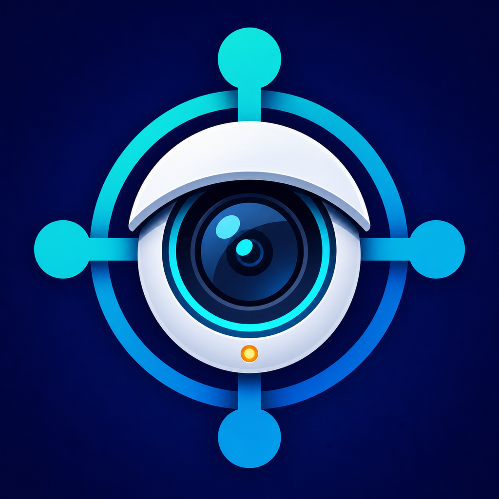

Add your equipment
Enter the address and credentials for equipment you own or are authorized to access. Cam-Hub can identify selected compatible devices or connect through ONVIF.

Cam-Hub功能介紹Cam-Hub 將設備連接、通道整理、即時監看與錄影回放集中在清楚一致的流程中。
Enter the address and credentials for equipment you own or are authorized to access. Cam-Hub can identify selected compatible devices or connect through ONVIF.
Review the cameras exposed by a camera or recorder and enable the channels you want to view.
Combine channels from different cameras and recorders into one monitoring dashboard.
Open a channel for live viewing. Recording search and playback are available when supported by the equipment.